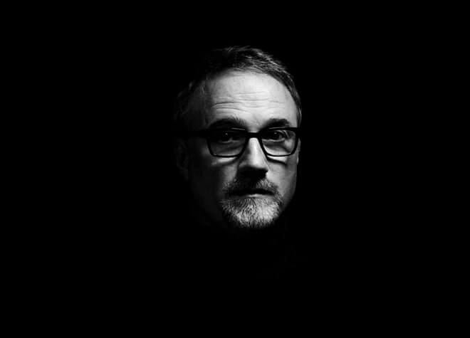
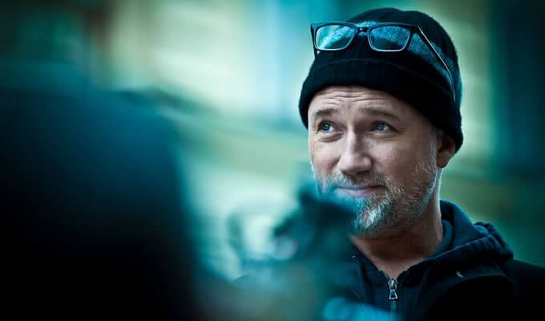

David Andrew Leo Fincher (28 d'agost de 1962, Denver, Colorado) és un director i productor estatunidenc que ha desenvolupat la seva tasca professional en cinema, televisió i, especialment en els seus inicis, també en el món dels vídeos musicals. Entre els reconeixements més destacats que ha assolit destaquen la nominació al premi Òscar com a millor director per la pel·lícula "El curiós cas de Benjamin Button" l'any 2008 i "La xarxa social" el 2010. Així mateix ha estat guardonat amb el Globus d'Or al millor director i el BAFTA a la millor direcció per la mateixa "La xarxa social".
Les seves pel·lícules més conegudes són, a part de les mencionades, "Seven" (també escrita com "Se7en") (1995), "El Club de la Lluita" (1999) que està basada en la novel·la homònima de Chuck Palahniuk o "The Girl with the Dragon Tattoo" (2011), remake de la pel·lícula sueca "Els homes que no estimaven a les dones" basada en les novel·les Millenium de Stieg Larson.

A la taula següent podem veure la filmografia completa del director, on únicament s'inclouen les pel·lícules, descartant obres realitzades per altres mitjans.
| Pel·lícula | Any |
|---|---|
| Alien 3 | 1992 |
| Se7en | 1995 |
| The Game | 1997 |
| Fight Club | 1999 |
| Panic room | 2002 |
| Zodiac | 2007 |
| The curious case of B. Button | 2008 |
| The social network | 2010 |
| The girl with the dragon tatoo | 2011 |
| Gone girl | 2014 |
Aquí podem veure una instantània del director en ple rodatge:
